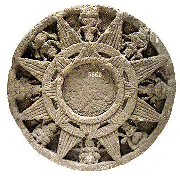
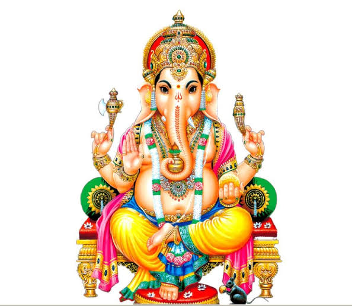
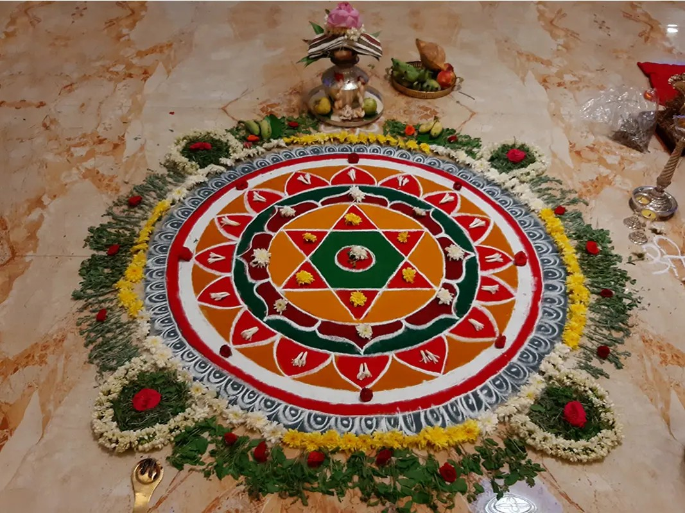
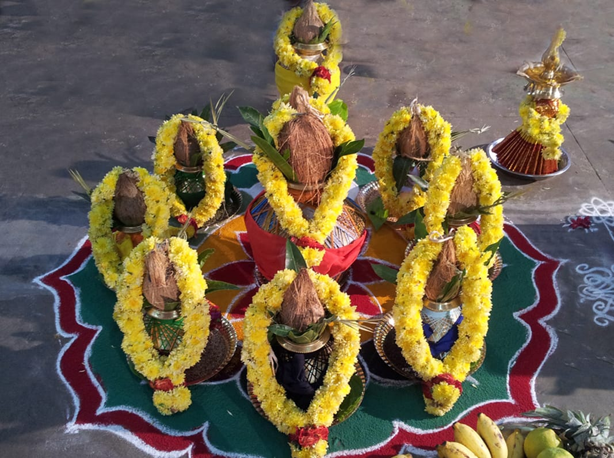

Gallery
Divine Blessings
Sacred deities who guide and inspire this astrological journey







Best Astrologer in Bangalore
Unlock the wisdom of the stars. Get accurate Vedic Astrology readings for Life, Career, Marriage, and Health.
Namaste! I am Shankaran Srinivasan Iyer, a distinguished Vedic Astrologer based in Bangalore with over a decade of experience in Jyothisha Shastra. My practice is built on a single promise — delivering accurate, clear, and confident insights that truly transform lives.
I am specialized in Horoscope matching, Kundli making and Vastu Shastra, guiding thousands of families across India through life's most important decisions — Marriage, Career, Health and Home. I am also one of the few practitioners to integrate Medical Astrology, helping clients understand health patterns through the lens of planetary science.
I am honoured to hold the prestigious Jyothisha Ratna Mimamsa award, conferred by the Assam Bangiya Jyotish & Tantra Society at the 36th International Astrological, Vastu & Tarot Conference held in Switzerland — a recognition of my contributions to Vedic Astrology on the global stage.
Personalised readings for every area of your life
A detailed analysis of your Birth Chart revealing your Personality, Strengths, Challenges, and Life Path.
Most PopularDetailed compatibility report based on Ashta Koota and Mangal Dosha analysis for a harmonious married life.
Find the right Career Path, auspicious timings for Business decisions, and wealth-building strategies.
Understand relationship patterns, resolve conflicts, and attract the right partner using Planetary guidance.
Home and office Vastu consultations to align your living space with positive cosmic energies.
Personalised gemstone advice based on your Kundli to strengthen beneficial planetary influences.
Choose the best dates for Weddings, Griha Pravesh, Business Launches, Travel, and more.
Effective mantra, yantra, and puja remedies to reduce the malefic effects of planets and bring harmony.
Sacred Vedic rituals and ceremonies performed with authentic tradition and devotion
Sacred deities who guide and inspire this astrological journey




Based on client experiences. Individual results may vary.
Got my job offer in February, exactly the month he said. No guesswork — he told me specific months to push hard. Accurate to the point it was unsettling.
He flagged a Dosha in our match, gave a simple remedy, and moved on. No drama, no upselling. Married two years, no regrets.
I ignored his timing advice and launched early. Failed in six weeks. Went back, followed his schedule for the relaunch — running profitably since. Lesson learnt the hard way.
Told me things about my childhood and family situation that he had no way of knowing. That is when I stopped doubting and started listening. Health improved after following his remedy.
Short session, very direct answers. He does not waste your time with vague statements. I asked about my daughter's education abroad — he said it will happen but after 2025. It did.
Consulted for Griha Pravesh Muhurta. He gave three date options with clear reasoning for each. We went with his first choice. The house has been peaceful and positive ever since.
I called him from Dubai over video. Same quality of reading as in-person. He identified a Saturn transit issue causing my delays at work and gave a specific mantra. Things shifted within weeks.
My mother was unwell for months and doctors were confused. He saw it in the chart immediately — told us the rough timeline for recovery. She recovered exactly when he said she would.
Got my job offer in February, exactly the month he said. No guesswork — he told me specific months to push hard. Accurate to the point it was unsettling.
He flagged a Dosha in our match, gave a simple remedy, and moved on. No drama, no upselling. Married two years, no regrets.
I ignored his timing advice and launched early. Failed in six weeks. Went back, followed his schedule for the relaunch — running profitably since. Lesson learnt the hard way.
Told me things about my childhood and family situation that he had no way of knowing. That is when I stopped doubting and started listening. Health improved after following his remedy.
Short session, very direct answers. He does not waste your time with vague statements. I asked about my daughter's education abroad — he said it will happen but after 2025. It did.
Consulted for Griha Pravesh Muhurta. He gave three date options with clear reasoning for each. We went with his first choice. The house has been peaceful and positive ever since.
I called him from Dubai over video. Same quality of reading as in-person. He identified a Saturn transit issue causing my delays at work and gave a specific mantra. Things shifted within weeks.
My mother was unwell for months and doctors were confused. He saw it in the chart immediately — told us the rough timeline for recovery. She recovered exactly when he said she would.
Reach out via WhatsApp for a quick response, or fill in the form and I will get back to you within 24 hours.
📲 Chat on WhatsApp